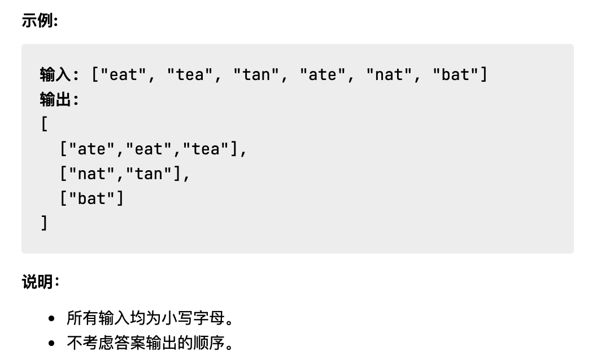

ARTS 打卡——Weekly ③
日拱一卒，功不唐捐。
Algorithm——算法题
字母异位词分组
问题描述
给定一个字符串数组，将字母异位词组合在一起。字母异位词指字母相同，但排列不同的字符串。

解题思路
首先想到的思路就是，模仿 HashMap 的方式，通过实现一个 hash 函数，得到一个单词的哈希值，然后作为这个单词的 key 缓存到一个 Cache 中，如果是字母以为词，放入相同的一个分组中，否则放入另外的分组中。最后，返回分好组的结果即可。（这个 hash 函数的算法可以有很多，我想到的最简单的实现就是，将输入的单词排序，因为字母异位词的特征就是，单词所组成的字母是相同的，但是顺序不同。所以重新排序得到的结果应该就是一致的，满足我们 hash 散列函数的要求。）
第二个思路，也是从网友的帖子中发现的一个比较有意思的算法。即：
利用质数代表26个字母，让乘积结果作为hash值这种算法比我们排序的算法要快上许多。实现简单，思路巧妙。
解答代码：
1 | // 解法1： |
Review——阅读一篇英文文章
~~~
Tip——学习一个技巧
控制反转、依赖反转、依赖注入，这三者有何区别和联系
控制反转（IOC）
- 这里的“控制”指的是对程序执行流程的控制，而“反转”指的是在没有使用框架之前，程序员自己控制整个程序的执行。在使用框架之后，整个程序的执行流程可以通过框架来控制。流程的控制权从程序员“反转”到了框架。
- 控制反转并不是一种具体的实现技巧，而是一个比较笼统的设计思想，一般用来指导框架层面的设计。
依赖注入（DI）
- 依赖注入跟控制反转恰恰相反，它是一种具体的编码技巧。
- 解释：不通过
new()的方式在类内部创建依赖类对象，而是将依赖的类对象在外部创建好之后，通过构造函数、函数参数等方式传递（或注入）给类使用。 - 例子对比：
1 | // 非依赖注入实现方式 |
- 把 MessageSender 定义成接口，基于接口而非实现编程，继续优化：
1 | public class Notification { |
依赖注入框架（DI Frameword）
- 在采用依赖注入实现的 Notification 类中，虽然我们不需要用类似 hard code 的方式，在类内部通过 new 来创建 MessageSender 对象，但是，这个创建对象、组装（或注入）对象的工作紧紧是被移动到了更上层代码而已，还是需要程序员自己来实现。
- 可以通过框架来自动完成，只需要通过依赖注入框架提供的扩展点，简单配置一下所有需要创建的类对象、类与类之间的依赖关系，就可以实现由框架来自动创建对象、管理对象的生命周期、依赖注入等原本需要程序员来做的事情。
- 这类框架有很多： Google Guice、Java Spring、Pico Container、Butterfly Container。
依赖反转原则（DIP）
- 原文：High-level modules shouldn’t depend on low-level modules. Both modules should depend on abstractions. In addition, abstractions shouldn’t depend on details. Details depend on abstractions.
- 定义：高层模块不要依赖低层模块。高层模块和低层模块应该通过抽象来互相依赖。除此之外，抽象不要依赖具体实现细节，具体实现细节依赖抽象。
- 这条原则主要是用来指导框架层面的设计，跟前面讲到的控制反转类似。
用 Tomcat 作为例子：
- Tomcat 是运行 Java Web 应用程序的容器，Tomcat 是高层模块，Java Web 是低层模块。两者之间没有直接的依赖关系，两者都依赖同一个“抽象”，就是 Servlet 规范。Servlet 规范不依赖具体的 Tomcat 容器和应用程序的实现细节，而两者都依赖 Servlet 规范。